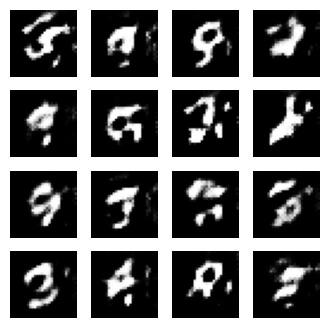
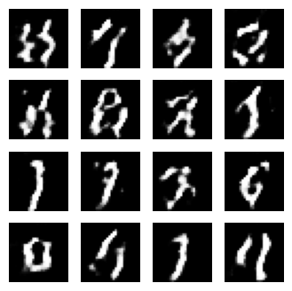
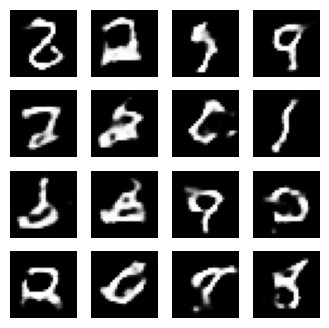
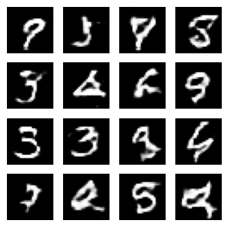
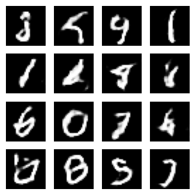
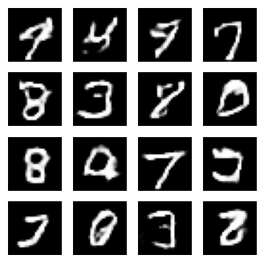
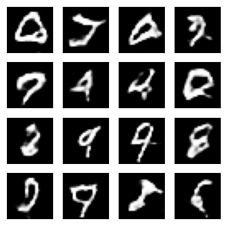

Downloading data from https://storage.googleapis.com/tensorflow/tf-keras-datasets/mnist.npz 11490434/11490434 ━━━━━━━━━━━━━━━━━━━━ 2s 0us/step (60000, 28, 28, 1)
Implementando una GAN

Cargamos el dataset MNIST. Un paso crucial es normalizar las imágenes a un rango de [-1, 1], lo que mejora la estabilidad del entrenamiento.
Bucle de Entrenamiento y Ejecución
El entrenamiento de una GAN se realiza en un ciclo de dos pasos: entrenar al discriminador, luego al generador. Usamos tf.function para optimizar el rendimiento.
Comenzando el entrenamiento...Época 1, Pérdida Generador: 0.7682, Pérdida Discriminador: 1.0427Época 2, Pérdida Generador: 0.8585, Pérdida Discriminador: 1.1998Época 3, Pérdida Generador: 1.3174, Pérdida Discriminador: 0.9072Época 4, Pérdida Generador: 0.8962, Pérdida Discriminador: 1.2319
Época 5, Pérdida Generador: 0.9154, Pérdida Discriminador: 1.2828
Época 6, Pérdida Generador: 0.8549, Pérdida Discriminador: 1.2938Época 7, Pérdida Generador: 0.9241, Pérdida Discriminador: 1.2403Época 8, Pérdida Generador: 0.9121, Pérdida Discriminador: 1.2696Época 9, Pérdida Generador: 0.9511, Pérdida Discriminador: 1.1447
Época 10, Pérdida Generador: 0.9949, Pérdida Discriminador: 1.2076
Época 11, Pérdida Generador: 0.9860, Pérdida Discriminador: 1.2167Época 12, Pérdida Generador: 0.9554, Pérdida Discriminador: 1.1741Época 13, Pérdida Generador: 0.9995, Pérdida Discriminador: 1.1283Época 14, Pérdida Generador: 1.0476, Pérdida Discriminador: 1.1429
Época 15, Pérdida Generador: 1.1402, Pérdida Discriminador: 1.0614
Época 16, Pérdida Generador: 1.0918, Pérdida Discriminador: 1.1061Época 17, Pérdida Generador: 1.1592, Pérdida Discriminador: 1.0873Época 18, Pérdida Generador: 1.1705, Pérdida Discriminador: 1.0983Época 19, Pérdida Generador: 1.1818, Pérdida Discriminador: 1.0607
Época 20, Pérdida Generador: 1.2809, Pérdida Discriminador: 0.9924
Época 21, Pérdida Generador: 1.2353, Pérdida Discriminador: 1.0174Época 22, Pérdida Generador: 1.1974, Pérdida Discriminador: 1.0726Época 23, Pérdida Generador: 1.2296, Pérdida Discriminador: 1.0790Época 24, Pérdida Generador: 1.2837, Pérdida Discriminador: 1.0146
Época 25, Pérdida Generador: 1.2208, Pérdida Discriminador: 1.0640
Época 26, Pérdida Generador: 1.1413, Pérdida Discriminador: 1.0985Época 27, Pérdida Generador: 1.1096, Pérdida Discriminador: 1.1574Época 28, Pérdida Generador: 1.1044, Pérdida Discriminador: 1.1458Época 29, Pérdida Generador: 1.0831, Pérdida Discriminador: 1.1524
Época 30, Pérdida Generador: 1.0313, Pérdida Discriminador: 1.1856
Época 31, Pérdida Generador: 1.0002, Pérdida Discriminador: 1.2063Época 32, Pérdida Generador: 0.9955, Pérdida Discriminador: 1.2053Época 33, Pérdida Generador: 0.9735, Pérdida Discriminador: 1.2122Época 34, Pérdida Generador: 0.9659, Pérdida Discriminador: 1.2332
Época 35, Pérdida Generador: 1.0457, Pérdida Discriminador: 1.2136
Época 36, Pérdida Generador: 1.1171, Pérdida Discriminador: 1.1412Época 37, Pérdida Generador: 0.9750, Pérdida Discriminador: 1.2220Época 38, Pérdida Generador: 0.9855, Pérdida Discriminador: 1.2063Época 39, Pérdida Generador: 1.0319, Pérdida Discriminador: 1.1863
Época 40, Pérdida Generador: 0.9484, Pérdida Discriminador: 1.2296
Época 41, Pérdida Generador: 0.9614, Pérdida Discriminador: 1.2081Época 42, Pérdida Generador: 0.9513, Pérdida Discriminador: 1.2309Época 43, Pérdida Generador: 0.9581, Pérdida Discriminador: 1.2194Época 44, Pérdida Generador: 0.9819, Pérdida Discriminador: 1.2105
Época 45, Pérdida Generador: 1.0339, Pérdida Discriminador: 1.1981
Época 46, Pérdida Generador: 1.0075, Pérdida Discriminador: 1.2052Época 47, Pérdida Generador: 1.0018, Pérdida Discriminador: 1.2102Época 48, Pérdida Generador: 1.0056, Pérdida Discriminador: 1.2138Época 49, Pérdida Generador: 0.9730, Pérdida Discriminador: 1.2131
Época 50, Pérdida Generador: 0.9364, Pérdida Discriminador: 1.2295
Época 51, Pérdida Generador: 0.9337, Pérdida Discriminador: 1.2315Época 52, Pérdida Generador: 0.9834, Pérdida Discriminador: 1.2009Época 53, Pérdida Generador: 0.9953, Pérdida Discriminador: 1.2180Época 54, Pérdida Generador: 0.9605, Pérdida Discriminador: 1.2223
Época 55, Pérdida Generador: 0.9466, Pérdida Discriminador: 1.2293
Época 56, Pérdida Generador: 0.9443, Pérdida Discriminador: 1.2218Época 57, Pérdida Generador: 0.9257, Pérdida Discriminador: 1.2333Época 58, Pérdida Generador: 0.9555, Pérdida Discriminador: 1.2351Época 59, Pérdida Generador: 0.9726, Pérdida Discriminador: 1.2217
Época 60, Pérdida Generador: 0.9974, Pérdida Discriminador: 1.2031
Época 61, Pérdida Generador: 0.9703, Pérdida Discriminador: 1.2354Época 62, Pérdida Generador: 0.9694, Pérdida Discriminador: 1.2184Época 63, Pérdida Generador: 0.9605, Pérdida Discriminador: 1.2280Época 64, Pérdida Generador: 0.9584, Pérdida Discriminador: 1.2260
Época 65, Pérdida Generador: 0.9559, Pérdida Discriminador: 1.2218
Época 66, Pérdida Generador: 0.9472, Pérdida Discriminador: 1.2209Época 67, Pérdida Generador: 0.9447, Pérdida Discriminador: 1.2338Época 68, Pérdida Generador: 0.9546, Pérdida Discriminador: 1.2339Época 69, Pérdida Generador: 0.9767, Pérdida Discriminador: 1.2187
Época 70, Pérdida Generador: 0.9702, Pérdida Discriminador: 1.2146
Época 71, Pérdida Generador: 0.9667, Pérdida Discriminador: 1.2150Época 72, Pérdida Generador: 0.9560, Pérdida Discriminador: 1.2209Época 73, Pérdida Generador: 0.9615, Pérdida Discriminador: 1.2150Época 74, Pérdida Generador: 0.9820, Pérdida Discriminador: 1.2059
Época 75, Pérdida Generador: 0.9470, Pérdida Discriminador: 1.2319
Época 76, Pérdida Generador: 0.9365, Pérdida Discriminador: 1.2333Época 77, Pérdida Generador: 0.9290, Pérdida Discriminador: 1.2355Época 78, Pérdida Generador: 0.9248, Pérdida Discriminador: 1.2340Época 79, Pérdida Generador: 0.9725, Pérdida Discriminador: 1.2132
Época 80, Pérdida Generador: 1.0410, Pérdida Discriminador: 1.2125
Época 81, Pérdida Generador: 1.0251, Pérdida Discriminador: 1.1996Época 82, Pérdida Generador: 0.9604, Pérdida Discriminador: 1.2264Época 83, Pérdida Generador: 0.9474, Pérdida Discriminador: 1.2311Época 84, Pérdida Generador: 0.9290, Pérdida Discriminador: 1.2374
Época 85, Pérdida Generador: 0.9173, Pérdida Discriminador: 1.2399
Época 86, Pérdida Generador: 0.9229, Pérdida Discriminador: 1.2354Época 87, Pérdida Generador: 0.9451, Pérdida Discriminador: 1.2337Época 88, Pérdida Generador: 0.9924, Pérdida Discriminador: 1.2280Época 89, Pérdida Generador: 1.0030, Pérdida Discriminador: 1.2119
Época 90, Pérdida Generador: 0.9670, Pérdida Discriminador: 1.2227
Época 91, Pérdida Generador: 0.9539, Pérdida Discriminador: 1.2228Época 92, Pérdida Generador: 0.9420, Pérdida Discriminador: 1.2367Época 93, Pérdida Generador: 0.9386, Pérdida Discriminador: 1.2362Época 94, Pérdida Generador: 0.9662, Pérdida Discriminador: 1.2249
Época 95, Pérdida Generador: 0.9685, Pérdida Discriminador: 1.2224
Época 96, Pérdida Generador: 0.9621, Pérdida Discriminador: 1.2319Época 97, Pérdida Generador: 0.9664, Pérdida Discriminador: 1.2291Época 98, Pérdida Generador: 0.9520, Pérdida Discriminador: 1.2372Época 99, Pérdida Generador: 0.9452, Pérdida Discriminador: 1.2367
Época 100, Pérdida Generador: 0.9366, Pérdida Discriminador: 1.2360
Entrenamiento finalizado.Análisis de Resultados
Visualización de las Pérdidas La visualización de las pérdidas es fundamental para diagnosticar el entrenamiento de una GAN. En el siguiente gráfico, podemos ver cómo la pérdida del generador y del discriminador interactúan a lo largo del tiempo.